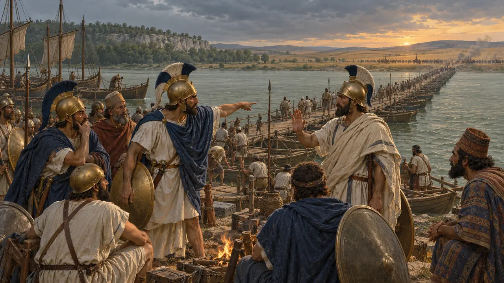
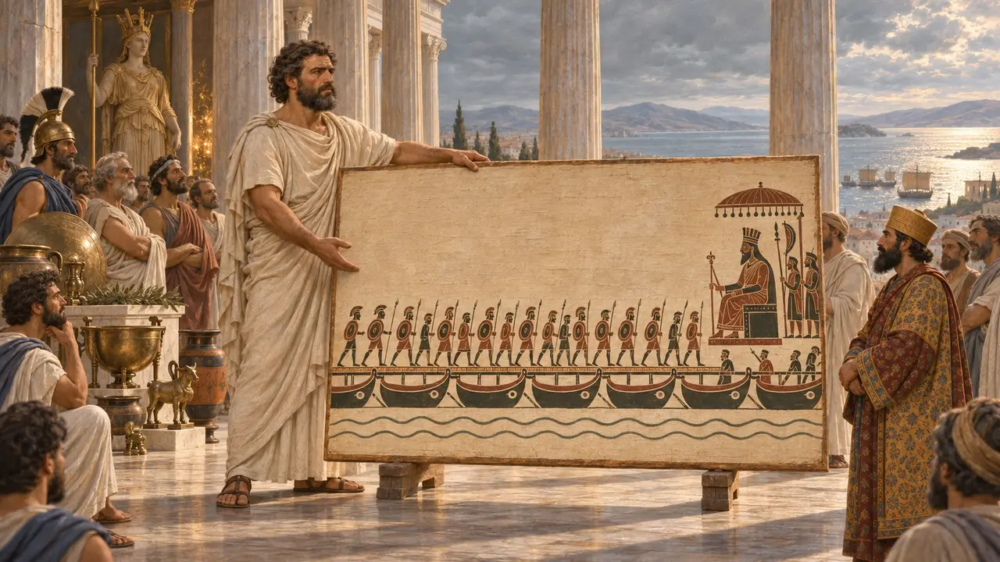
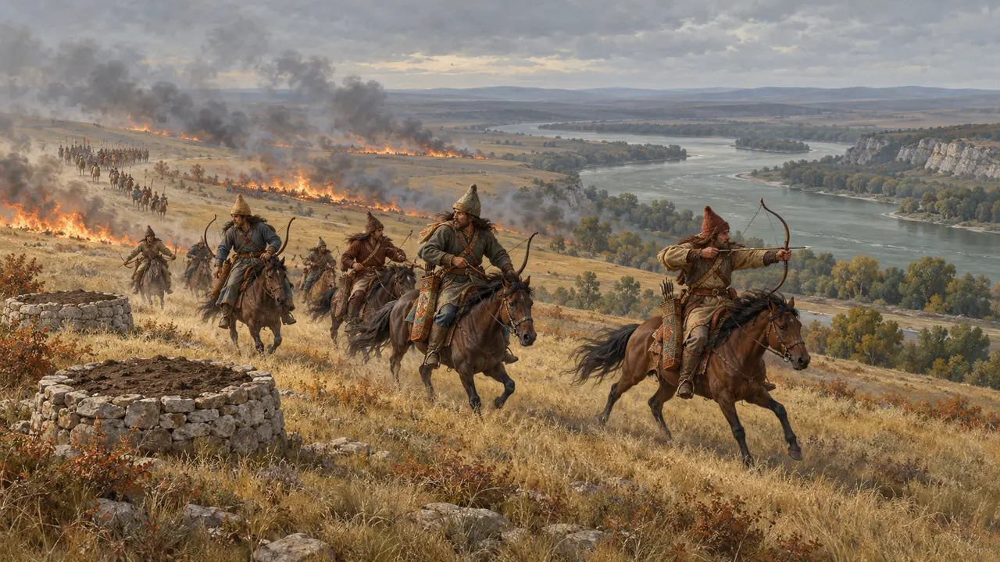
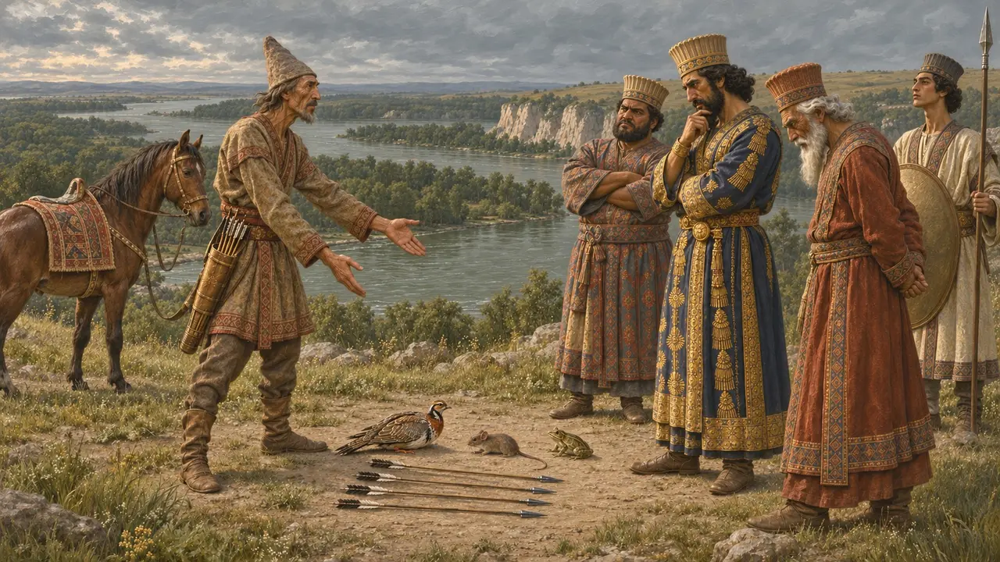
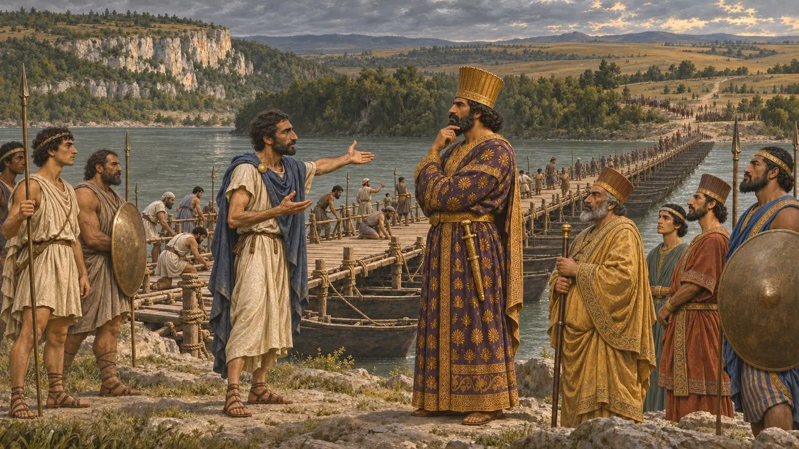

Niveau 6 : Le Pont de bateaux · L'Istros · 513 av. J.-C.
Le Pont de bateaux
Le pont de bateaux sur l'Istros, le Danube, gardé par les Ioniens.
Encyclopédie › L'Histoire
Vers 513 av. J.-C., Darius franchit le Bosphore vers l'Europe sur un pont de bateaux, traversa la Thrace et jeta un pont sur l'Istros, le Danube, pour frapper les Scythes. Ceux-ci refusèrent le combat. Le pont, tenu par les Grecs d'Ionie, devint pour l'armée la seule voie du retour.
Le narrateur
About 513 Darius bridged the Bosporus and then the Ister, le Danube, to march against the Scythians.
- 514 BCE Le Bosphore franchi
- 513 av. J.-C. Au-delà de l'Istros
- 513 av. J.-C. La guerre de la steppe
- 512 BCE Mégabaze en Thrace

Le pont de Mandroclès
Récit antiqueMandroclès de Samos jeta un pont de bateaux sur le Bosphore. Darius le récompensa richement, et il consacra une peinture de la traversée dans le temple d'Héra à Samos. Darius fit dresser près du détroit deux stèles énumérant ses peuples.
Dans le jeu : The Ionian boatyard builds the bridge's boats, and the Inscribed Stone stands here as the King's Pillar of the Nations.
Herodotus 4.83-89

Sept cent mille hommes ?
ContestéHérodote donne 700 000 hommes et 600 navires. Aucune armée antique de l'époque n'aurait pu être nourrie en si grand nombre ; les historiens modernes envisagent une force bien moindre. Même la date est incertaine, entre 519 av. J.-C. et 512 av. J.-C. environ.
Dans le jeu : Le rassemblement présente une estimation moderne, et le signale.
Herodotus 4.87; Briant (2002) chapter 4

Les Gètes
Récit antiqueSur la route de l'Istros, seuls les Gètes combattirent, et ils furent vaincus. Hérodote dit qu'ils croyaient en l'immortalité et envoyaient à intervalles de quelques années un messager à leur dieu Zalmoxis.
Dans le jeu : Once the King's host is called, a band of Getae comes against the camp: Thracians, not Scythians, who stand and fight on foot.
Herodotus 4.93-96

La guerre sans bataille
Récit antiqueLes Scythes attirèrent les Perses vers l'est à travers la steppe, comblant les puits et brûlant l'herbe devant eux, sans jamais accepter le combat. Leurs cavaliers faisaient volte-face et frappaient quand les Perses s'étiraient en longues colonnes.
Dans le jeu : Les archers à cheval scythes simulent la fuite jusqu'à trois fois, et leurs raids sont plus rapides sur la glace de l'hiver.
Herodotus 4.120-127

Un oiseau, une souris, une grenouille, cinq flèches
Légende tardiveHérodote rapporte que les Scythes envoyèrent ces présents à Darius. Darius y vit la remise de la terre et de l'eau ; Gobryas y lut : à moins de vous envoler comme des oiseaux, de vous cacher comme des souris ou de sauter dans les lacs comme des grenouilles, ces flèches vous tueront. Le récit a la forme d'une parabole.
Herodotus 4.131-132
Les Ioniens au pont
ContestéLes Scythes pressèrent les Ioniens de rompre le pont. Miltiade, maître de la Chersonèse, y consentit ; Histiée de Milet objecta que leur propre pouvoir dépendait de Darius, et le pont tint. Miltiade fut plus tard le vainqueur de Marathon, et l'histoire a peut-être été racontée à son avantage.
Dans le jeu : Tenez le pont jusqu'au retour du Roi.
Herodotus 4.136-142

Read next: the topics of Le Pont de bateaux
Batailles et événements
Le siège de Barcé · La construction d'un pont sur le Bosphore · La campagne scythe de Darius · La défaite des Gètes · Le débat au pont de l'Istros
Bâtiments
Soldats et navires
Population
Darius le Grand · Gobryas · Mandroclès de Samos · Histiée de Milet · Miltiade · Idanthyrsos
Peuples
Lieux
Suse · Milet · Le Bosphore · L'Istros · Marathon · Samos · Thrace · The Chersonese · Lesbos et Mytilène
Faune et climat
Cerfs · Le sanglier · Les chevaux sauvages de la steppe · La cigogne blanche · Le lièvre · Le renard · Le loup · Canards sauvages · L'aurochs · Le milan · Le vautour fauve · Le pigeon biset · Le choucas · La grue · L'hirondelle · Chauves-souris · La chevêche · La corneille mantelée · Brume matinale